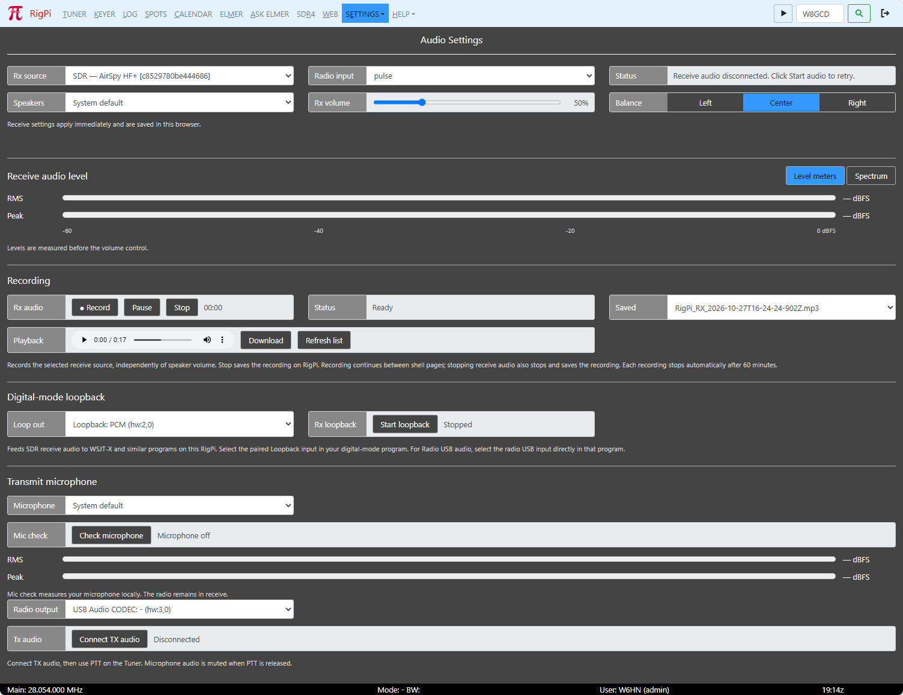

|
<< Click to Display Table of Contents >> Navigation: Settings > Audio |

.Open Settings > Audio in the master menu. Use the menu-bar ▶ button to start receive audio and ❚❚ to pause it. Receive audio and microphone connections stay with the master shell while you move between RigPi pages.
Rx source: Choose SDR for the SDR receiver, or Radio USB audio for the radio's USB audio interface. For Radio USB audio, select the radio CODEC under Radio input. Speakers chooses your browser's output. Adjust Rx volume and Balance for listening; these preferences are saved in this browser.
Receive audio level: Select Level meters or Spectrum. RMS and Peak are measured before the volume control, so reducing speaker volume does not reduce the meter reading. The spectrum shows the received audio frequencies.
Start receive audio, then click Record beside Rx audio. Use Pause and Resume to suspend and continue recording. Stop saves an MP3 on RigPi. The timer shows recorded time. Recording continues across shell pages; stopping receive audio also stops and saves the recording. A recording stops automatically after 60 minutes.
Choose a recording under Saved. Use Playback to listen, Download to save a copy on your computer, or Refresh list to update the saved list. Recording uses the selected receive source before speaker volume. If saving fails, use Retry save or download the unsaved recording before leaving the shell.
For WSJT-X or another digital-mode program running on this RigPi, select the Loopback device under Loop out and click Start loopback beside Rx loopback. This feeds SDR receive audio to the program independently of browser listening. For Radio USB receive, select the radio USB audio input directly in the digital-mode program.
On this station, the verified WSJT-X SDR input is plughw:CARD=Loopback,DEV=1. The transmit output is rigpi_tx — RigPi TX, which selects the dedicated transmit loopback channel. CAT/PTT settings are separate from audio. See Additional Ham Radio Software for the digital-mode workflow.
Select your browser Microphone. Click Check microphone to view its RMS and Peak levels without transmitting; stop the check when finished. Allow microphone access when prompted. Microphone capture requires a browser connection that supports microphone access, normally HTTPS or localhost.
Select the radio USB CODEC under Radio output, then click Connect TX audio. The microphone remains muted until you use the Tuner's PTT control. Releasing PTT mutes it again. Disconnect TX audio when finished. The radio must be configured to accept its USB/data audio input; connecting CAT alone does not carry audio.
Choosing No SDR in Express setup hides the SDR windows and selects Radio USB receive audio when a suitable USB audio device is available. Remote (OpenWebRX and KiwiSDR) opens the Remote receiver controls when you click Finish; choose and connect a receiver there.
For silence, confirm the receiver or radio has a signal, the selected receive source and radio input are correct, and receive audio is playing. Check the level meters before changing speaker volume. For microphone trouble, check the selected microphone, browser permission, and microphone meters before connecting TX audio. For digital modes, verify receive and transmit device choices separately.